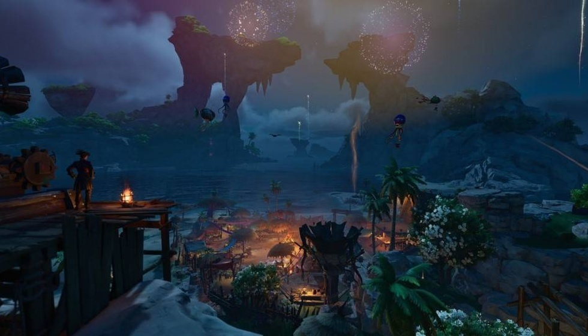

告别固定航线！这艘木偶船凭什么让主机党甘愿做“时间
一夜暴富不是梦吗？只要你抓得住飘在海面上的金罐子，百万撤离或许就是你下一个周末的烦恼。国内玩家谁都懂搬砖的快乐？这片海域散落着无数无人海岛和尘封遗迹，海面暗涌之下炮火轰鸣击碎沉寂，战斗奖励让人眼红。别总盯着那些肝到地老天荒的数值堆砌了，在这里贸易抉择才是致富真谛；善于把握时机打捞珍稀秘宝，一趟冒险就能实现财富自由、焦虑瞬间爆发，这才是我们想要的电子养鱼场真滋味。
但这仅仅是冒险的开始，真正的乐趣在于这片海域如何重塑你的记忆。“脑袋进水”的木偶船长奥托皮亚命运可任由你改写：想送走谁就送走，想找回故人便伸手打捞，完全打破了传统 RPG 那种打卡式任务的死板逻辑。对于习惯了刷本升级的我们来说，这种允许失败并从中获得新记忆的机制，简直是对行业旧套路的一次降维打击；PC 端大屏沉浸式体验更是让每一次命运抉择都来得格外痛快。
当战火平息，这片海域的浪漫才真正开始在你的指尖流淌。“抓鸡”、桌游闲局、趣味套圈一应俱全，待到黄昏垂落静坐海岸合影晚风，在循环的日常里打捞细碎的温柔与欢喜。7 月 23 日移动端正式上线的消息刚过不久，双端数据互通优势立马显现：同一账号随时能切换平台出航，这种社交粘性瞬间拉满，让每一位船长都能集齐伙伴，纯粹享受探索与陪伴的乐趣，不用被版本更新或碎片时间所困扰。

然而，真正让这片海域与众不同的灵魂，还藏在那些看似不起眼的重逢里。“记忆循环”机制下全船员免费获取设定，每周通关遗忘之旅还有概率拿黑券船员；这不仅仅是个游戏机制，它精准踩中了国人口中“电子墓碑”的痛点——我们玩游戏不再是为了逃避现实，而是为了在虚拟世界里修补那些破碎的情感连接。网易 Joker 工作室自研的技术底蕴支撑起这个关于失去的全新解法，让找回战友不再是遥不可及的梦想，而是触手可及的现实慰藉。
风帆已满潮水起，下一次出航永远值得期待，这片遗忘之海的传奇现在由你执笔！各位船长，你是选择沉入深海去找回旧日的爱人，还是乘风破浪去寻找那座未知的孤岛？PC 今日公测与移动端即将集结的号角已经吹响，互动环节你最想在这个海域找回谁？评论区聊聊你的第一波出海计划吧！
关于我们
📱 公众号名称：三天游戏
✍️ 作者：曾三天
扫码关注公众号，获取每日最新资讯

商务合作与版权
商务合作 / 内容投稿 / 品牌推广
请关注公众号「三天游戏」后台留言联系
版权声明：本文由作者整理，转载需注明出处。